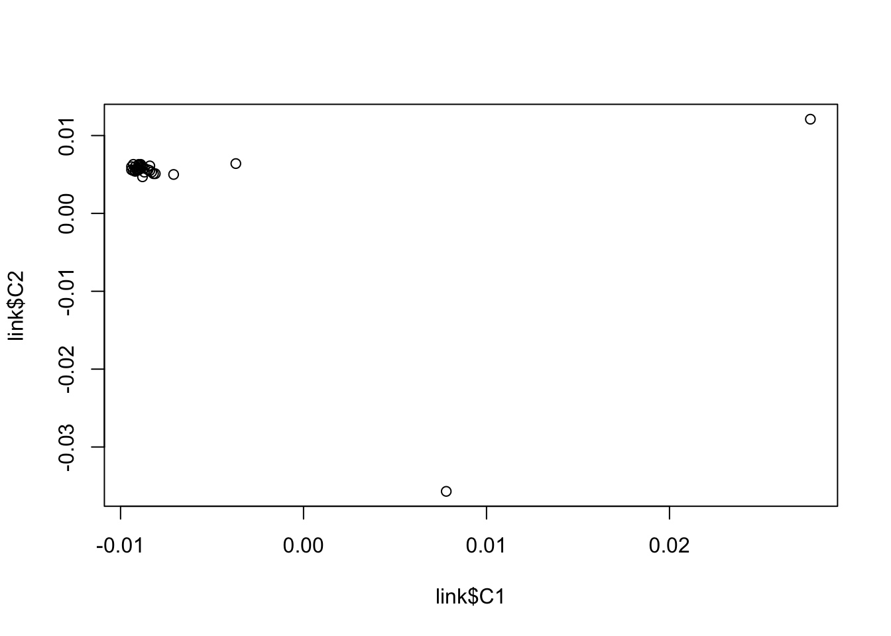
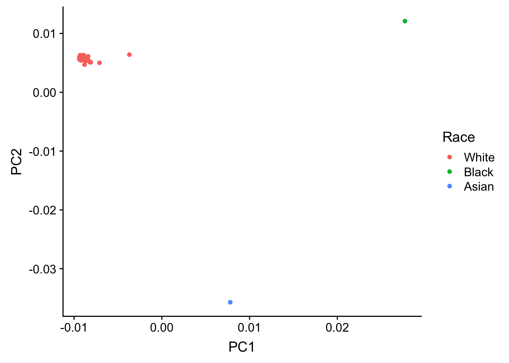
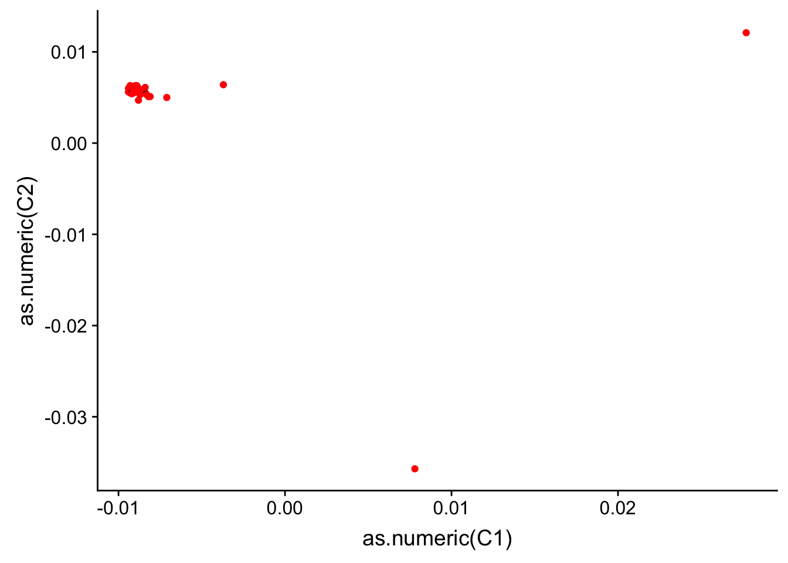
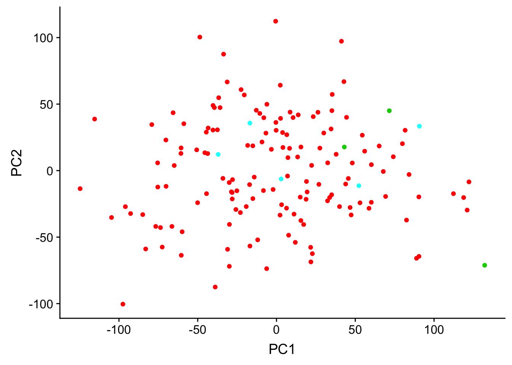

Last updated: 2018-08-28
workflowr checks: (Click a bullet for more information) ✖ R Markdown file: uncommitted changes
The R Markdown is untracked by Git. To know which version of the R Markdown file created these results, you’ll want to first commit it to the Git repo. If you’re still working on the analysis, you can ignore this warning. When you’re finished, you can run wflow_publish to commit the R Markdown file and build the HTML.
✔ Environment: empty
Great job! The global environment was empty. Objects defined in the global environment can affect the analysis in your R Markdown file in unknown ways. For reproduciblity it’s best to always run the code in an empty environment.
✔ Seed:
set.seed(12345)
The command set.seed(12345) was run prior to running the code in the R Markdown file. Setting a seed ensures that any results that rely on randomness, e.g. subsampling or permutations, are reproducible.
✔ Session information: recorded
Great job! Recording the operating system, R version, and package versions is critical for reproducibility.
✔ Repository version: 241c630
wflow_publish or wflow_git_commit). workflowr only checks the R Markdown file, but you know if there are other scripts or data files that it depends on. Below is the status of the Git repository when the results were generated:
Ignored files:
Ignored: .DS_Store
Ignored: analysis/.DS_Store
Ignored: analysis/figure/
Ignored: data/.DS_Store
Ignored: data/aux_info/
Ignored: data/hg_38/
Ignored: data/libParams/
Ignored: output/.DS_Store
Untracked files:
Untracked: _workflowr.yml
Untracked: analysis/Collection_dates.Rmd
Untracked: analysis/Converting_IDs.Rmd
Untracked: analysis/Global_variation.Rmd
Untracked: analysis/Preliminary_clinical_covariate.Rmd
Untracked: analysis/VennDiagram2018-07-24_06-55-46.log
Untracked: analysis/VennDiagram2018-07-24_06-56-13.log
Untracked: analysis/VennDiagram2018-07-24_06-56-50.log
Untracked: analysis/VennDiagram2018-07-24_06-58-41.log
Untracked: analysis/VennDiagram2018-07-24_07-00-07.log
Untracked: analysis/VennDiagram2018-07-24_07-00-42.log
Untracked: analysis/VennDiagram2018-07-24_07-01-08.log
Untracked: analysis/VennDiagram2018-08-17_15-13-24.log
Untracked: analysis/VennDiagram2018-08-17_15-13-30.log
Untracked: analysis/VennDiagram2018-08-17_15-15-06.log
Untracked: analysis/VennDiagram2018-08-17_15-16-01.log
Untracked: analysis/VennDiagram2018-08-17_15-17-51.log
Untracked: analysis/VennDiagram2018-08-17_15-18-42.log
Untracked: analysis/VennDiagram2018-08-17_15-19-21.log
Untracked: analysis/VennDiagram2018-08-20_09-07-57.log
Untracked: analysis/VennDiagram2018-08-20_09-08-37.log
Untracked: analysis/VennDiagram2018-08-26_19-54-03.log
Untracked: analysis/VennDiagram2018-08-26_20-47-08.log
Untracked: analysis/VennDiagram2018-08-26_20-49-49.log
Untracked: analysis/VennDiagram2018-08-27_00-04-36.log
Untracked: analysis/VennDiagram2018-08-27_00-09-27.log
Untracked: analysis/VennDiagram2018-08-27_00-13-57.log
Untracked: analysis/VennDiagram2018-08-27_00-16-32.log
Untracked: analysis/VennDiagram2018-08-27_10-00-25.log
Untracked: analysis/VennDiagram2018-08-28_06-03-13.log
Untracked: analysis/VennDiagram2018-08-28_06-03-14.log
Untracked: analysis/VennDiagram2018-08-28_06-05-50.log
Untracked: analysis/VennDiagram2018-08-28_06-06-58.log
Untracked: analysis/VennDiagram2018-08-28_06-10-12.log
Untracked: analysis/VennDiagram2018-08-28_06-10-13.log
Untracked: analysis/VennDiagram2018-08-28_06-18-29.log
Untracked: analysis/background_dds_david.csv
Untracked: analysis/correlations_bet_covariates.Rmd
Untracked: analysis/correlations_over_time.Rmd
Untracked: analysis/genocode_annotation_info.Rmd
Untracked: analysis/genotypes.Rmd
Untracked: analysis/import_transcript_level_estimates.Rmd
Untracked: analysis/test_dds_david.csv
Untracked: analysis/tximport.Rmd
Untracked: analysis/unnormalized_data.Rmd
Untracked: analysis/variables_by_time.Rmd
Untracked: analysis/voom_limma.Rmd
Untracked: analysis/voom_limma_weight_change.Rmd
Untracked: data/BAN2 Dates_T1_T2.xlsx
Untracked: data/BAN_DATES.csv
Untracked: data/BAN_DATES.xlsx
Untracked: data/BAN_DATES_txt.csv
Untracked: data/Ban_geno.csv
Untracked: data/Ban_geno.xlsx
Untracked: data/Blood_dates.txt
Untracked: data/DAVID_background.txt
Untracked: data/DAVID_list_T1T2.txt
Untracked: data/DAVID_list_T1T2_weight.txt
Untracked: data/DAVID_list_T2T3.txt
Untracked: data/DAVID_list_T2T3_weight.txt
Untracked: data/DAVID_results/
Untracked: data/DAVID_top100_list_T1T2.txt
Untracked: data/DAVID_top100_list_T1T2_weight.txt
Untracked: data/DAVID_top100_list_T2T3.txt
Untracked: data/DAVID_top100_list_T2T3_weight.txt
Untracked: data/Eigengenes/
Untracked: data/FemaleWeightRestoration-01-dataInput.RData
Untracked: data/FemaleWeightRestoration-resid-01-dataInput.RData
Untracked: data/FemaleWeightRestoration-resid-T1T2-01-dataInput.RData
Untracked: data/HTSF_IDs.sav
Untracked: data/Homo_sapiens.GRCh38.v22_table.txt
Untracked: data/Labels.csv
Untracked: data/Labels.xlsx
Untracked: data/RIN.xlsx
Untracked: data/RIN_over_time.csv
Untracked: data/RIN_over_time.xlsx
Untracked: data/T0_consolid.csv
Untracked: data/T0_consolid.xlsx
Untracked: data/age_t1.txt
Untracked: data/birthday_age.csv
Untracked: data/birthday_age.xlsx
Untracked: data/clinical_sample_info_geno.csv
Untracked: data/cmd_info.json
Untracked: data/counts_hg38_gc.RData
Untracked: data/counts_hg38_gc_dds.RData
Untracked: data/counts_hg38_gc_txsalmon.RData
Untracked: data/covar_lm.csv
Untracked: data/covar_lm_missing.csv
Untracked: data/eigengenes_T1_T2_cov_adj_exp_5_modules.txt
Untracked: data/eigengenes_T1_T2_module_background.txt
Untracked: data/eigengenes_adj_exp_7_modules.txt
Untracked: data/eigengenes_cov_adj_exp_14_modules.txt
Untracked: data/eigengenes_module_background.txt
Untracked: data/eigengenes_unadj_exp_10_modules.txt
Untracked: data/eigengenes_unadj_exp_6_modules.txt
Untracked: data/eigengenes_unadj_exp_9_modules.txt
Untracked: data/files_list.txt
Untracked: data/final_covariates.csv
Untracked: data/gene_exp_values_2202.txt
Untracked: data/gene_exp_values_2209.txt
Untracked: data/gene_exp_values_2218.txt
Untracked: data/gene_exp_values_2220.txt
Untracked: data/gene_exp_values_2226.txt
Untracked: data/gene_exp_values_2228.txt
Untracked: data/gene_expression_filtered_T1T5.csv
Untracked: data/gene_names_58387.txt
Untracked: data/gene_to_tran.txt
Untracked: data/lm_covar_fixed_random.csv
Untracked: data/lm_covar_fixed_random_geno.csv
Untracked: data/logs/
Untracked: data/module_T1T2_cov_adj_blue.txt
Untracked: data/module_T1T2_cov_adj_brown.txt
Untracked: data/module_T1T2_cov_adj_turquoise.txt
Untracked: data/module_T1T2_cov_adj_yellow.txt
Untracked: data/module_adj_cov_merged_blue.txt
Untracked: data/module_adj_cov_merged_brown.txt
Untracked: data/module_adj_cov_merged_cyan.txt
Untracked: data/module_adj_cov_merged_green.txt
Untracked: data/module_adj_cov_merged_greenyellow.txt
Untracked: data/module_adj_cov_merged_magenta.txt
Untracked: data/module_adj_cov_merged_red.txt
Untracked: data/module_adj_cov_merged_salmon.txt
Untracked: data/module_adj_cov_merged_tan.txt
Untracked: data/module_adj_cov_merged_yellow.txt
Untracked: data/module_black.txt
Untracked: data/module_blue.txt
Untracked: data/module_brown.txt
Untracked: data/module_cov_adj_black.txt
Untracked: data/module_cov_adj_blue.txt
Untracked: data/module_cov_adj_brown.txt
Untracked: data/module_cov_adj_cyan.txt
Untracked: data/module_cov_adj_green.txt
Untracked: data/module_cov_adj_greenyellow.txt
Untracked: data/module_cov_adj_magenta.txt
Untracked: data/module_cov_adj_pink.txt
Untracked: data/module_cov_adj_purple.txt
Untracked: data/module_cov_adj_red.txt
Untracked: data/module_cov_adj_salmon.txt
Untracked: data/module_cov_adj_tan.txt
Untracked: data/module_cov_adj_turquoise.txt
Untracked: data/module_cov_adj_yellow.txt
Untracked: data/module_cyan.txt
Untracked: data/module_green.txt
Untracked: data/module_greenyellow.txt
Untracked: data/module_magenta.txt
Untracked: data/module_merged_black.txt
Untracked: data/module_merged_blue.txt
Untracked: data/module_merged_brown.txt
Untracked: data/module_merged_cyan.txt
Untracked: data/module_merged_green.txt
Untracked: data/module_merged_greenyellow.txt
Untracked: data/module_merged_magenta.txt
Untracked: data/module_merged_pink.txt
Untracked: data/module_merged_purple.txt
Untracked: data/module_merged_red.txt
Untracked: data/module_merged_salmon.txt
Untracked: data/module_merged_tan.txt
Untracked: data/module_merged_turquoise.txt
Untracked: data/module_merged_yellow.txt
Untracked: data/module_pink.txt
Untracked: data/module_purple.txt
Untracked: data/module_red.txt
Untracked: data/module_salmon.txt
Untracked: data/module_tan.txt
Untracked: data/module_turquoise.txt
Untracked: data/module_yellow.txt
Untracked: data/notimecovariates.csv
Untracked: data/only_individuals_biomarkers_weight_restoration_study.xlsx
Untracked: data/pcs_genes.csv
Untracked: data/pcs_genes.txt
Untracked: data/rest1t2_BI_hg37.rds
Untracked: data/rest1t2_BI_hg38.rds
Untracked: data/rest1t2_hg37.rds
Untracked: data/rest1t2_psych_meds_BMI_hg37.rds
Untracked: data/rest1t2_psych_meds_hg37.rds
Untracked: data/rest2t3_BI_hg37.rds
Untracked: data/rest2t3_BI_hg38.rds
Untracked: data/rest2t3_hg37.rds
Untracked: data/rest2t3_psych_meds_BMI_hg37.rds
Untracked: data/rest2t3_psych_meds_hg37.rds
Untracked: data/salmon_gene_matrix_bak_reorder_time.txt
Untracked: data/technical_sample_info.csv
Untracked: data/tx_to_gene.txt
Untracked: data/tx_to_gene_37.txt
Untracked: data/usa2.pcawithref.menv.mds_cov
Untracked: data/~$Labels.xlsx
Untracked: data/~$T0_consolid.xlsx
Untracked: docs/VennDiagram2018-07-24_06-55-46.log
Untracked: docs/VennDiagram2018-07-24_06-56-13.log
Untracked: docs/VennDiagram2018-07-24_06-56-50.log
Untracked: docs/VennDiagram2018-07-24_06-58-41.log
Untracked: docs/VennDiagram2018-07-24_07-00-07.log
Untracked: docs/VennDiagram2018-07-24_07-00-42.log
Untracked: docs/VennDiagram2018-07-24_07-01-08.log
Untracked: docs/figure/
Unstaged changes:
Modified: analysis/_site.yml
Modified: analysis/about.Rmd
Deleted: analysis/chunks.R
Modified: analysis/index.Rmd
Modified: analysis/license.Rmd
The goal of this script is to analyze the genotypes of the individuals in the
# Load library
library(ggplot2)Warning: package 'ggplot2' was built under R version 3.4.4library(cowplot)Warning: package 'cowplot' was built under R version 3.4.4
Attaching package: 'cowplot'The following object is masked from 'package:ggplot2':
ggsave# Load the PC genotype data
usa2.pcawithref.menv <- read.table("../data/usa2.pcawithref.menv.mds_cov", stringsAsFactors = FALSE, header = TRUE)
# Reformat cells
test <- t(unlist(strsplit(as.character(usa2.pcawithref.menv[1,]), " ")))
reformat_array <- array(NA, dim = c(nrow(usa2.pcawithref.menv),28))
for (i in 1:nrow(usa2.pcawithref.menv)){
reformat_array[i,] <- t(unlist(strsplit(as.character(usa2.pcawithref.menv[i,]), " ")))
}
colnames(reformat_array) <- c("FID", "IID", "SOL", "C1", "C2", "C3", "C4", "C5", "C6", "C7", "C8", "C9", "C10", "C11", "C12", "C13", "C14", "C15", "C16", "C17", "C18", "C19", "C20", "st1", "st2", "st3", "st4", "st5")
reformat_array <- as.data.frame(reformat_array, stringsAsFactors = FALSE)
# BAN to genotype ids
Ban_geno <- read.csv("../data/Ban_geno.csv")
Ban_geno <- Ban_geno[,1:3]
link <- merge(reformat_array, Ban_geno, by.x = c("IID"), by.y = c("External_code"))# Initial plot
plot(link$C1, link$C2)
# Reorder by BAN_ID
order_link <- link[order(link$BAN_ID),]
# Integrate with race/ethnicity
clinical_info <- read.csv("../data/clinical_sample_info_geno.csv")
race_eth <- cbind(clinical_info$BAN_ID, clinical_info$Race, clinical_info$Ethnicity)
dedup <- race_eth[!duplicated(race_eth),]
colnames(dedup) <- c("BAN_ID", "Race", "Ethnicity")
# Combine PCs and Race/Ethnicity
pcs_race <- merge(order_link, dedup, by = c("BAN_ID"))
# Plot Race
summary(pcs_race$Race) Min. 1st Qu. Median Mean 3rd Qu. Max.
2.000 2.000 2.000 2.121 2.000 5.000 pcs_race$C1 <- as.numeric(pcs_race$C1)
pcs_race$C2 <- as.numeric(pcs_race$C2)
pcs_race$Race <- as.factor(pcs_race$Race)
race_plot <- ggplot(pcs_race, aes(C1, C2, color = Race)) + geom_point(aes(color = pcs_race$Race)) + xlab("PC1") + ylab("PC2") + scale_color_discrete(name = c("Race"), labels = c("White", "Black", "Asian"))
plot_grid(race_plot)
#save_plot("/Users/laurenblake/Dropbox/Lauren Blake/Figures/PCA_genotype_33.png", race_plot,
# base_aspect_ratio = 1)
# Plot Ethnicity
summary(pcs_race$Ethnicity) Min. 1st Qu. Median Mean 3rd Qu. Max.
1.000 2.000 2.000 1.939 2.000 2.000 race_ethnicity <- ggplot(pcs_race, aes(as.numeric(C1), as.numeric(C2))) + geom_point(color = as.factor(pcs_race$Ethnicity))
plot_grid(race_ethnicity)
# Load individuals
inds <- read.csv("../data/lm_covar_fixed_random.csv")
# Load gene expression data from all 156 samples
normalized_data <- read.csv("../data/gene_expression_filtered_T1T5.csv")
# Run PCA on the normalized data
pca_genes <- prcomp(t(normalized_data[,2:157]), scale = TRUE, center = TRUE)
matrixpca <- pca_genes$x
PC1 <- matrixpca[,1]
PC2 <- matrixpca[,2]
pc3 <- matrixpca[,3]
pc4 <- matrixpca[,4]
pc5 <- matrixpca[,5]
matrixpca <- as.data.frame(matrixpca)
ggplot(matrixpca, aes(PC1, PC2)) + geom_point(color = as.factor(inds$Race))
# Merge
pcs_gene <- merge(inds, pcs_race, by.x = c("Individual"), by.y = c("BAN_ID"), all.x = TRUE)
#write.csv(pcs_gene, file = "../data/pcs_genes.csv")
# Genotype PCs and gene expression PCs
# Genotype PCs- inds PC1, PC2, pc3, pc4, pc5
geno_pcs <- cbind(pcs_gene$C1, pcs_gene$C2, pcs_gene$C3, pcs_gene$C4, pcs_gene$C5)
# Gene expression PCs PC1, PC2, pc3, pc4, pc5
exp_pcs <- matrixpca
# Look at the correlation between genotype and gene expression PCs
PC_pvalues <- matrix(data = NA, nrow = 5, ncol = 5)
PC_r2 <- matrix(data = NA, nrow = 5, ncol = 5)
j=1
for (i in 1:5){
for (j in 1:5){
checkPC1 <- lm(exp_pcs[,j] ~ geno_pcs[,i])
#Get the summary statistics from it
summary(checkPC1)
#Get the p-value of the F-statistic
summary(checkPC1)$fstatistic
fstat <- as.data.frame(summary(checkPC1)$fstatistic)
p_fstat <- 1-pf(fstat[1,], fstat[2,], fstat[3,])
#Fraction of the variance explained by the model
r2_value <- summary(checkPC1)$r.squared
#Put the summary statistics into the matrix w
PC_pvalues[j, i] <- p_fstat
PC_r2[j, i] <- sqrt(r2_value)
}
}
PC_pvalues [,1] [,2] [,3] [,4] [,5]
[1,] 0.7284291 0.8718604 0.9758057 0.6688093 0.44217602
[2,] 0.5334731 0.3182166 0.6805427 0.7026873 0.54787400
[3,] 0.7640570 0.7281449 0.7094446 0.9547397 0.68724443
[4,] 0.6279917 0.3637570 0.1395446 0.3894734 0.12304434
[5,] 0.2668212 0.2760426 0.0537522 0.1497131 0.04555031PC_r2 [,1] [,2] [,3] [,4] [,5]
[1,] 0.3747362 0.3395651 0.3122323 0.4380801 0.5642826
[2,] 0.4101985 0.4481101 0.4107386 0.4317606 0.5477315
[3,] 0.3672563 0.3747938 0.4052225 0.3558263 0.5246404
[4,] 0.3937424 0.4396422 0.5145687 0.4855540 0.6259618
[5,] 0.4583122 0.4564179 0.5492556 0.5352130 0.6569248#
summary(lm(exp_pcs$PC1 ~ as.factor(inds$Individual)))
Call:
lm(formula = exp_pcs$PC1 ~ as.factor(inds$Individual))
Residuals:
Min 1Q Median 3Q Max
-105.572 -25.606 0.263 29.322 82.106
Coefficients:
Estimate Std. Error t value Pr(>|t|)
(Intercept) -19.3616 28.7645 -0.673 0.5024
as.factor(inds$Individual)2202 13.3167 36.3846 0.366 0.7151
as.factor(inds$Individual)2203 89.9787 45.4807 1.978 0.0506 .
as.factor(inds$Individual)2204 22.3070 40.6792 0.548 0.5847
as.factor(inds$Individual)2205 92.5553 45.4807 2.035 0.0445 *
as.factor(inds$Individual)2206 101.6186 40.6792 2.498 0.0141 *
as.factor(inds$Individual)2207 64.4914 40.6792 1.585 0.1160
as.factor(inds$Individual)2208 19.5135 40.6792 0.480 0.6325
as.factor(inds$Individual)2209 1.0985 36.3846 0.030 0.9760
as.factor(inds$Individual)2210 39.7511 40.6792 0.977 0.3308
as.factor(inds$Individual)2212 67.0229 45.4807 1.474 0.1437
as.factor(inds$Individual)2215 0.0947 40.6792 0.002 0.9981
as.factor(inds$Individual)2216 49.5588 40.6792 1.218 0.2260
as.factor(inds$Individual)2218 8.7791 36.3846 0.241 0.8098
as.factor(inds$Individual)2219 30.9841 40.6792 0.762 0.4480
as.factor(inds$Individual)2220 -13.4357 36.3846 -0.369 0.7127
as.factor(inds$Individual)2221 1.7413 40.6792 0.043 0.9659
as.factor(inds$Individual)2222 46.4545 45.4807 1.021 0.3095
as.factor(inds$Individual)2224 28.9250 40.6792 0.711 0.4787
as.factor(inds$Individual)2226 -8.7533 36.3846 -0.241 0.8104
as.factor(inds$Individual)2228 2.4691 36.3846 0.068 0.9460
as.factor(inds$Individual)2229 -20.3303 45.4807 -0.447 0.6558
as.factor(inds$Individual)2232 -29.3737 40.6792 -0.722 0.4719
as.factor(inds$Individual)2233 31.1382 40.6792 0.765 0.4458
as.factor(inds$Individual)2234 34.1855 40.6792 0.840 0.4027
as.factor(inds$Individual)2235 64.7807 40.6792 1.592 0.1144
as.factor(inds$Individual)2236 33.9494 45.4807 0.746 0.4571
as.factor(inds$Individual)2239 42.2090 40.6792 1.038 0.3019
as.factor(inds$Individual)2240 21.1739 45.4807 0.466 0.6425
as.factor(inds$Individual)2242 -8.9251 40.6792 -0.219 0.8268
as.factor(inds$Individual)2243 -39.8009 40.6792 -0.978 0.3302
as.factor(inds$Individual)2245 22.4821 45.4807 0.494 0.6222
as.factor(inds$Individual)2247 5.2058 45.4807 0.114 0.9091
as.factor(inds$Individual)2248 31.6231 40.6792 0.777 0.4388
as.factor(inds$Individual)2249 -23.7633 45.4807 -0.522 0.6025
as.factor(inds$Individual)2250 -18.4777 45.4807 -0.406 0.6854
as.factor(inds$Individual)2251 4.4844 45.4807 0.099 0.9217
as.factor(inds$Individual)2252 -48.3774 45.4807 -1.064 0.2900
as.factor(inds$Individual)2253 46.4340 45.4807 1.021 0.3097
as.factor(inds$Individual)2254 58.5507 40.6792 1.439 0.1531
as.factor(inds$Individual)2255 62.8194 45.4807 1.381 0.1703
as.factor(inds$Individual)2256 -3.9874 40.6792 -0.098 0.9221
as.factor(inds$Individual)2257 -34.4837 45.4807 -0.758 0.4501
as.factor(inds$Individual)2258 24.9128 40.6792 0.612 0.5416
as.factor(inds$Individual)2260 18.8908 40.6792 0.464 0.6434
as.factor(inds$Individual)2261 46.9656 45.4807 1.033 0.3042
as.factor(inds$Individual)2262 4.7721 45.4807 0.105 0.9166
as.factor(inds$Individual)2266 23.1074 40.6792 0.568 0.5713
as.factor(inds$Individual)2267 13.4927 45.4807 0.297 0.7673
as.factor(inds$Individual)2268 38.2483 40.6792 0.940 0.3493
as.factor(inds$Individual)2269 -7.0156 45.4807 -0.154 0.8777
as.factor(inds$Individual)2270 -38.0309 45.4807 -0.836 0.4050
as.factor(inds$Individual)2271 16.0481 40.6792 0.395 0.6940
as.factor(inds$Individual)2272 4.4790 40.6792 0.110 0.9125
as.factor(inds$Individual)2274 91.0681 40.6792 2.239 0.0274 *
---
Signif. codes: 0 '***' 0.001 '**' 0.01 '*' 0.05 '.' 0.1 ' ' 1
Residual standard error: 49.82 on 101 degrees of freedom
Multiple R-squared: 0.4016, Adjusted R-squared: 0.08168
F-statistic: 1.255 on 54 and 101 DF, p-value: 0.1624summary(lm(exp_pcs$PC1 ~ as.factor(inds$Race)))
Call:
lm(formula = exp_pcs$PC1 ~ as.factor(inds$Race))
Residuals:
Min 1Q Median 3Q Max
-122.346 -35.217 0.932 34.715 124.450
Coefficients:
Estimate Std. Error t value Pr(>|t|)
(Intercept) -2.289 4.183 -0.547 0.58503
as.factor(inds$Race)3 84.546 29.676 2.849 0.00499 **
as.factor(inds$Race)5 20.687 23.139 0.894 0.37269
---
Signif. codes: 0 '***' 0.001 '**' 0.01 '*' 0.05 '.' 0.1 ' ' 1
Residual standard error: 50.89 on 153 degrees of freedom
Multiple R-squared: 0.05434, Adjusted R-squared: 0.04198
F-statistic: 4.396 on 2 and 153 DF, p-value: 0.01392summary(lm(exp_pcs$PC2 ~ as.factor(inds$Race)))
Call:
lm(formula = exp_pcs$PC2 ~ as.factor(inds$Race))
Residuals:
Min 1Q Median 3Q Max
-100.011 -26.679 -4.111 29.069 112.690
Coefficients:
Estimate Std. Error t value Pr(>|t|)
(Intercept) -0.3734 3.2498 -0.115 0.909
as.factor(inds$Race)3 -2.4307 23.0562 -0.105 0.916
as.factor(inds$Race)5 13.1076 17.9771 0.729 0.467
Residual standard error: 39.54 on 153 degrees of freedom
Multiple R-squared: 0.003563, Adjusted R-squared: -0.009463
F-statistic: 0.2735 on 2 and 153 DF, p-value: 0.7611summary(lm(exp_pcs$PC1 ~ geno_pcs[,1]))
Call:
lm(formula = exp_pcs$PC1 ~ geno_pcs[, 1])
Residuals:
Min 1Q Median 3Q Max
-132.705 -35.717 5.717 38.461 100.425
Coefficients:
Estimate Std. Error t value Pr(>|t|)
(Intercept) 4.626 38.640 0.120 0.905
geno_pcs[, 1]-0.0071 -4.667 54.646 -0.085 0.932
geno_pcs[, 1]-0.0081 -24.651 54.646 -0.451 0.653
geno_pcs[, 1]-0.0082 45.110 54.646 0.825 0.412
geno_pcs[, 1]-0.0083 -62.019 54.646 -1.135 0.260
geno_pcs[, 1]-0.0084 -15.831 44.618 -0.355 0.724
geno_pcs[, 1]-0.0085 -23.988 49.884 -0.481 0.632
geno_pcs[, 1]-0.0087 -18.743 47.324 -0.396 0.693
geno_pcs[, 1]-0.0088 -3.293 44.618 -0.074 0.941
geno_pcs[, 1]-0.0089 -14.351 43.201 -0.332 0.741
geno_pcs[, 1]-0.009 3.443 40.623 0.085 0.933
geno_pcs[, 1]-0.0091 20.686 43.201 0.479 0.633
geno_pcs[, 1]-0.0092 -12.740 43.201 -0.295 0.769
geno_pcs[, 1]-0.0093 -5.280 43.201 -0.122 0.903
geno_pcs[, 1]-0.0094 22.865 45.720 0.500 0.618
geno_pcs[, 1]0.0078 6.759 49.884 0.135 0.893
geno_pcs[, 1]0.0277 54.431 49.884 1.091 0.279
Residual standard error: 54.65 on 74 degrees of freedom
(65 observations deleted due to missingness)
Multiple R-squared: 0.1404, Adjusted R-squared: -0.04543
F-statistic: 0.7556 on 16 and 74 DF, p-value: 0.7284summary(lm(exp_pcs$PC2 ~ geno_pcs[,1]))
Call:
lm(formula = exp_pcs$PC2 ~ geno_pcs[, 1])
Residuals:
Min 1Q Median 3Q Max
-107.090 -21.031 1.545 25.131 60.190
Coefficients:
Estimate Std. Error t value Pr(>|t|)
(Intercept) -18.7717 25.5348 -0.735 0.4646
geno_pcs[, 1]-0.0071 60.2004 36.1117 1.667 0.0997 .
geno_pcs[, 1]-0.0081 25.6306 36.1117 0.710 0.4801
geno_pcs[, 1]-0.0082 32.8006 36.1117 0.908 0.3667
geno_pcs[, 1]-0.0083 -17.9777 36.1117 -0.498 0.6201
geno_pcs[, 1]-0.0084 10.7153 29.4850 0.363 0.7173
geno_pcs[, 1]-0.0085 4.5755 32.9653 0.139 0.8900
geno_pcs[, 1]-0.0087 36.0867 31.2736 1.154 0.2523
geno_pcs[, 1]-0.0088 26.2883 29.4850 0.892 0.3755
geno_pcs[, 1]-0.0089 26.4590 28.5488 0.927 0.3570
geno_pcs[, 1]-0.009 17.6991 26.8451 0.659 0.5117
geno_pcs[, 1]-0.0091 14.9706 28.5488 0.524 0.6016
geno_pcs[, 1]-0.0092 25.4771 28.5488 0.892 0.3751
geno_pcs[, 1]-0.0093 -0.3447 28.5488 -0.012 0.9904
geno_pcs[, 1]-0.0094 19.9330 30.2132 0.660 0.5115
geno_pcs[, 1]0.0078 30.0521 32.9653 0.912 0.3649
geno_pcs[, 1]0.0277 -24.4411 32.9653 -0.741 0.4608
---
Signif. codes: 0 '***' 0.001 '**' 0.01 '*' 0.05 '.' 0.1 ' ' 1
Residual standard error: 36.11 on 74 degrees of freedom
(65 observations deleted due to missingness)
Multiple R-squared: 0.1683, Adjusted R-squared: -0.01157
F-statistic: 0.9357 on 16 and 74 DF, p-value: 0.5335summary(lm(geno_pcs[,1] ~ as.factor(inds$Race)))
Call:
lm(formula = geno_pcs[, 1] ~ as.factor(inds$Race))
Residuals:
Min 1Q Median 3Q Max
-0.012367 -0.001801 -0.001701 -0.001101 0.034999
Coefficients:
Estimate Std. Error t value Pr(>|t|)
(Intercept) -0.0072988 0.0007568 -9.644 1.94e-15 ***
as.factor(inds$Race)3 0.0102655 0.0040990 2.504 0.0141 *
as.factor(inds$Race)5 -0.0014678 0.0040990 -0.358 0.7211
---
Signif. codes: 0 '***' 0.001 '**' 0.01 '*' 0.05 '.' 0.1 ' ' 1
Residual standard error: 0.006978 on 88 degrees of freedom
(65 observations deleted due to missingness)
Multiple R-squared: 0.06848, Adjusted R-squared: 0.04731
F-statistic: 3.234 on 2 and 88 DF, p-value: 0.04411summary(lm(geno_pcs[,2] ~ as.factor(inds$Race)))
Call:
lm(formula = geno_pcs[, 2] ~ as.factor(inds$Race))
Residuals:
Min 1Q Median 3Q Max
-0.040096 0.001004 0.001204 0.001654 0.007704
Coefficients:
Estimate Std. Error t value Pr(>|t|)
(Intercept) 0.0043965 0.0008272 5.315 7.98e-07 ***
as.factor(inds$Race)3 0.0036369 0.0044801 0.812 0.419
as.factor(inds$Race)5 0.0015702 0.0044801 0.350 0.727
---
Signif. codes: 0 '***' 0.001 '**' 0.01 '*' 0.05 '.' 0.1 ' ' 1
Residual standard error: 0.007626 on 88 degrees of freedom
(65 observations deleted due to missingness)
Multiple R-squared: 0.0086, Adjusted R-squared: -0.01393
F-statistic: 0.3817 on 2 and 88 DF, p-value: 0.6839summary(lm(geno_pcs[,3] ~ as.factor(inds$Race)))
Call:
lm(formula = geno_pcs[, 3] ~ as.factor(inds$Race))
Residuals:
Min 1Q Median 3Q Max
-0.0099165 -0.0003249 0.0000000 0.0006835 0.0055835
Coefficients:
Estimate Std. Error t value Pr(>|t|)
(Intercept) -0.0041835 0.0002342 -17.861 <2e-16 ***
as.factor(inds$Race)3 0.0002169 0.0012686 0.171 0.865
as.factor(inds$Race)5 0.0003835 0.0012686 0.302 0.763
---
Signif. codes: 0 '***' 0.001 '**' 0.01 '*' 0.05 '.' 0.1 ' ' 1
Residual standard error: 0.002159 on 88 degrees of freedom
(65 observations deleted due to missingness)
Multiple R-squared: 0.001331, Adjusted R-squared: -0.02137
F-statistic: 0.05862 on 2 and 88 DF, p-value: 0.9431summary(lm(geno_pcs[,4] ~ as.factor(inds$Race)))
Call:
lm(formula = geno_pcs[, 4] ~ as.factor(inds$Race))
Residuals:
Min 1Q Median 3Q Max
-0.0054424 -0.0003545 0.0001576 0.0006576 0.0025576
Coefficients:
Estimate Std. Error t value Pr(>|t|)
(Intercept) -0.0031576 0.0001347 -23.440 <2e-16 ***
as.factor(inds$Race)3 0.0016243 0.0007296 2.226 0.0285 *
as.factor(inds$Race)5 -0.0009757 0.0007296 -1.337 0.1846
---
Signif. codes: 0 '***' 0.001 '**' 0.01 '*' 0.05 '.' 0.1 ' ' 1
Residual standard error: 0.001242 on 88 degrees of freedom
(65 observations deleted due to missingness)
Multiple R-squared: 0.07325, Adjusted R-squared: 0.05219
F-statistic: 3.478 on 2 and 88 DF, p-value: 0.03518summary(lm(geno_pcs[,5] ~ as.factor(inds$Race)))
Call:
lm(formula = geno_pcs[, 5] ~ as.factor(inds$Race))
Residuals:
Min 1Q Median 3Q Max
-0.0091176 -0.0047176 -0.0016176 0.0007245 0.0278824
Coefficients:
Estimate Std. Error t value Pr(>|t|)
(Intercept) -0.0044824 0.0008647 -5.184 1.37e-06 ***
as.factor(inds$Race)3 -0.0001843 0.0046831 -0.039 0.969
as.factor(inds$Race)5 -0.0039843 0.0046831 -0.851 0.397
---
Signif. codes: 0 '***' 0.001 '**' 0.01 '*' 0.05 '.' 0.1 ' ' 1
Residual standard error: 0.007972 on 88 degrees of freedom
(65 observations deleted due to missingness)
Multiple R-squared: 0.008159, Adjusted R-squared: -0.01438
F-statistic: 0.362 on 2 and 88 DF, p-value: 0.6973sessionInfo()R version 3.4.3 (2017-11-30)
Platform: x86_64-apple-darwin15.6.0 (64-bit)
Running under: OS X El Capitan 10.11.6
Matrix products: default
BLAS: /Library/Frameworks/R.framework/Versions/3.4/Resources/lib/libRblas.0.dylib
LAPACK: /Library/Frameworks/R.framework/Versions/3.4/Resources/lib/libRlapack.dylib
locale:
[1] en_US.UTF-8/en_US.UTF-8/en_US.UTF-8/C/en_US.UTF-8/en_US.UTF-8
attached base packages:
[1] stats graphics grDevices utils datasets methods base
other attached packages:
[1] cowplot_0.9.3 ggplot2_3.0.0
loaded via a namespace (and not attached):
[1] Rcpp_0.12.18 compiler_3.4.3 pillar_1.3.0
[4] git2r_0.23.0 plyr_1.8.4 workflowr_1.1.1
[7] bindr_0.1.1 R.methodsS3_1.7.1 R.utils_2.6.0
[10] tools_3.4.3 digest_0.6.16 evaluate_0.11
[13] tibble_1.4.2 gtable_0.2.0 pkgconfig_2.0.2
[16] rlang_0.2.2 yaml_2.2.0 bindrcpp_0.2.2
[19] withr_2.1.2 stringr_1.3.1 dplyr_0.7.6
[22] knitr_1.20 rprojroot_1.3-2 grid_3.4.3
[25] tidyselect_0.2.4 glue_1.3.0 R6_2.2.2
[28] rmarkdown_1.10 purrr_0.2.5 magrittr_1.5
[31] whisker_0.3-2 backports_1.1.2 scales_1.0.0
[34] htmltools_0.3.6 assertthat_0.2.0 colorspace_1.3-2
[37] labeling_0.3 stringi_1.2.4 lazyeval_0.2.1
[40] munsell_0.5.0 crayon_1.3.4 R.oo_1.22.0
This reproducible R Markdown analysis was created with workflowr 1.1.1